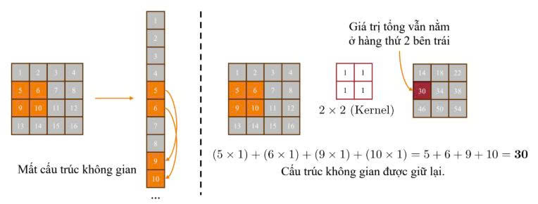
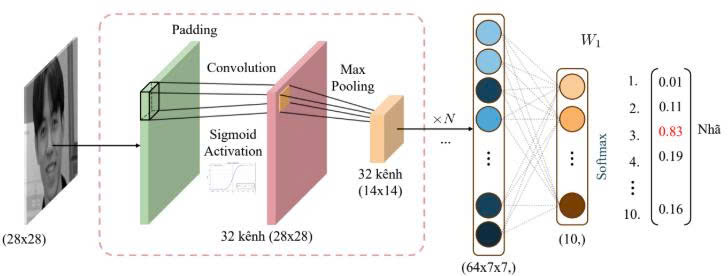
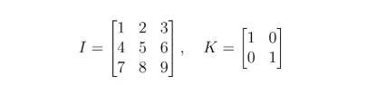
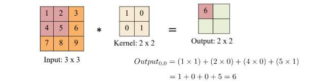
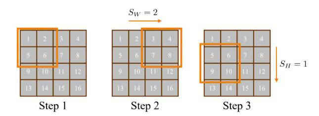
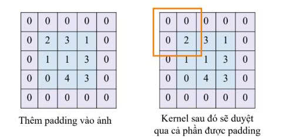
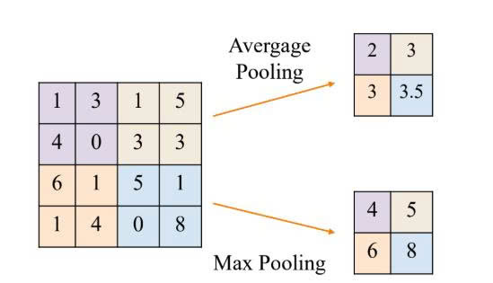
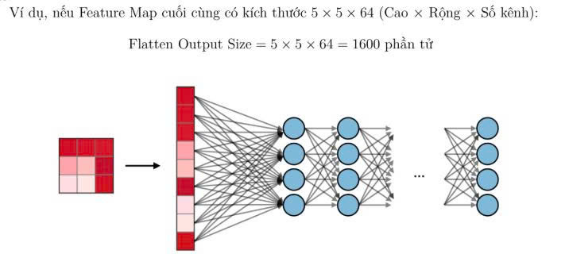

I. Giới thiệu
Trong lĩnh vực thị giác máy tính, việc xử lý hình ảnh đòi hỏi máy tính không chỉ nhận biết được giá trị của từng điểm ảnh (pixel) mà còn phải hiểu được mối quan hệ không gian giữa chúng. Trước khi sự ra đời của Convolutional Neural Networks (CNN), các mạng nơ‑ron truyền thống (Fully Connected Networks – FC) thường gặp khó khăn lớn khi đối mặt với dữ liệu hình ảnh. Vấn đề cốt lõi nằm ở việc mạng FC yêu cầu đầu vào phải được “duỗi phẳng” (flatten) thành một vector một chiều, vô tình phá vỡ cấu trúc không gian 2D/3D tự nhiên của ảnh, làm mất thông tin về hình dạng và vị trí tương đối của các vật thể. Hơn nữa, với một bức ảnh màu kích thước trung bình (ví dụ 200×200×3), số lượng tham số trong mạng FC sẽ lên tới hàng triệu, dẫn đến chi phí tính toán khổng lồ và nguy cơ overfitting rất cao. CNN ra đời với tư duy mô phỏng cơ chế thị giác của con người, tập trung vào việc trích xuất các đặc trưng cục bộ như cạnh, góc, và mảng màu thông qua các bộ lọc (filters).
Hình 1: So sánh FC Network (phá vỡ cấu trúc không gian) và CNN (bảo toàn cấu trúc).

Chúng ta sẽ bắt đầu với khái niệm nền tảng là phép tích chập, tìm hiểu cách các tham số như Stride và Padding ảnh hưởng đến kích thước đầu ra. Tiếp theo, ta sẽ khám phá kỹ thuật Pooling để giảm chiều dữ liệu nhưng vẫn giữ lại đặc trưng quan trọng, và cuối cùng là kết nối tất cả thông qua lớp Flatten để đưa vào mô hình phân loại. Để đơn giản và các bạn có thể làm theo, bài đọc này sẽ sử dụng ảnh xám (số channel là 1), và sau đó sẽ mở rộng ra ảnh màu ở cuối bài.
Hình 2: Luồng xử lý của mạng CNN.

II. Tại sao cần CNN cho hình ảnh?
Mạng FC có hai nhược điểm lớn khi xử lý ảnh:
- Mất cấu trúc không gian: “Duỗi phẳng” làm mất mối quan hệ giữa các pixel lân cận.
- Bùng nổ tham số: Ảnh 200×200×3 ⇒ 120.000 đầu vào, nếu lớp ẩn có 1000 nơ‑ron ⇒ 120 triệu trọng số, dễ overfit.
CNN khắc phục bằng cơ chế chia sẻ tham số và kết nối cục bộ, giữ nguyên cấu trúc không gian 3D (chiều cao, rộng, sâu).
III. Phép tích chập (Convolution)
Trong xử lý ảnh, ta sử dụng một ma trận nhỏ gọi là Kernel (hoặc Filter) đóng vai trò như một cửa sổ trượt (sliding window) quét qua toàn bộ bức ảnh đầu vào. Tại mỗi vị trí mà Kernel ghé qua, ta thực hiện phép nhân từng phần tử giữa Kernel và vùng ảnh tương ứng, sau đó cộng tổng lại để tạo ra một điểm ảnh mới trên Feature Map.
- Input I: Ma trận 3 × 3
- Kernel K: Ma trận 2 × 2 được thiết kế để phát hiện một đặc trưng cụ thể.


Kết quả của phép tính này không chỉ là những con số vô tri. Giá trị của Kernel được thiết kế đặc biệt để làm nổi bật các đặc trưng quan trọng của ảnh như cạnh (edges), góc (corners), hoặc các vân bề mặt (textures). Những vùng ảnh khớp với mẫu của Kernel sẽ cho ra giá trị lớn trên Feature Map, và ngược lại.
import torch
import torch.nn as nn
input_img = torch.tensor([[[[1.,2.,3.],[4.,5.,6.],[7.,8.,9.]]]])
conv = nn.Conv2d(1,1,kernel_size=2,bias=False)
conv.weight.data = torch.tensor([[[[1.,0.],[0.,1.]]]])
output = conv(input_img)
print(output) # tensor([[[[ 6., 8.],[12.,14.]]]])IV. Stride (bước trượt)
Stride là khoảng cách kernel di chuyển mỗi bước. Stride = 1: trượt từng ô; Stride = 2: nhảy cóc 2 ô, làm giảm kích thước output. Có thể đặt stride khác nhau theo chiều dọc (SH) và ngang (SW). Công thức tính kích thước đầu ra:
Hình 3: Minh họa Stride = (1, 2). Kernel di chuyển từng ô một theo chiều dọc, nhưng nhảy cóc 2 ô theo chiều ngang.

V. Padding
Khi thực hiện phép tích chập liên tục trên một bức ảnh mà không có biện pháp can thiệp, ta sẽ gặp phải hai vấn đề lớn. Thứ nhất là “sự thu hẹp kích thước”, cứ qua mỗi lớp tích chập, kích thước Feature Map lại nhỏ dần đi, giới hạn độ sâu của mạng nơ-ron. Thứ hai là “mất mát thông tin các cạnh”, các điểm ảnh ở góc và cạnh chỉ được Kernel quét qua ít lần hơn so với các điểm ảnh ở trung tâm, dẫn đến việc bỏ sót các đặc trưng quan trọng ở viền ảnh.
Padding thêm các giá trị (thường là 0) quanh ảnh để giải quyết vấn đề thu hẹp kích thước và mất thông tin biên. Valid padding (P=0) làm output nhỏ hơn. Same padding tính P sao cho output = input (khi stride=1). Công thức chung với padding P:
Hình 4: Minh họa Zero-padding: Thêm một viền giá trị 0 (P=1) quanh ảnh Input 4x4 để giữ nguyên kích thước khi qua Kernel 3x3.

VI. Pooling
Sau khi trích xuất đặc trưng bằng Convolution, ta thu được các Feature Map chứa thông tin chi tiết về vị trí của các đặc trưng (ví dụ: mắt ở toạ độ x, y). Tuy nhiên, trong nhiều bài toán nhận diện, ta chỉ cần biết “có mắt hay không” chứ không cần vị trí chính xác tuyệt đối. Quá nhiều chi tiết không gian sẽ làm tăng số lượng tính toán không cần thiết và dễ gây Overfitting.
Lớp Pooling ra đời nhằm mục đích giảm chiều dữ liệu, giúp mạng trở nên nhẹ hơn và bất biến với các dịch chuyển nhỏ (Translation Invariance). Khác với Convolution, lớp Pooling không có tham số trọng số nào để học, nó chỉ áp dụng một công thức cố định. Có hai loại Pooling phổ biến nhất:
- Max Pooling: hoạt động bằng cách chia ảnh thành các vùng nhỏ và chỉ giữ lại giá trị lớn nhất trong vùng đó. Ý nghĩa của việc này là chỉ giữ lại đặc trưng nổi bật nhất (ví dụ: biên cạnh rõ nhất, màu sáng nhất) và loại bỏ các thông tin nhiễu xung quanh. Đây là phương pháp được sử dụng phổ biến nhất hiện nay.
- Average Pooling: tính giá trị trung bình của các phần tử trong vùng trượt. Phương pháp này có tác dụng làm mượt (smooth) hình ảnh và đặc trưng. Ngày nay, Average Pooling thường ít được dùng ở giữa mạng mà hay được dùng ở lớp cuối cùng (Global Average Pooling) để thay thế cho lớp Fully Connected.
Hình 5: So sánh kết quả của Max Pooling và Average Pooling trên cùng một vùng dữ liệu.

VII. Flatten
Sau khi dữ liệu đi qua một chuỗi các lớp Convolution và Pooling, ta thu được một khối tensor 3D chứa các đặc trưng cấp cao đã được cô đọng. Tuy nhiên, để thực hiện bài toán phân loại, ta cần đưa dữ liệu này vào một mạng nơ-ron truyền thống, nơi yêu cầu đầu vào phải là vector 1 chiều.
Lớp Flatten đóng vai trò là “cây cầu” nối giữa phần trích xuất đặc trưng và phần phân loại. Nhiệm vụ của nó đơn giản là duỗi thẳng toàn bộ khối tensor đa chiều thành một vector dài liên tục.
Hình 6: Minh họa quá trình Flatten: Biến đổi Tensor 3D thành Vector 1D để đưa vào lớp Fully Connected.

import torch
import torch.nn as nn
feature_map = torch.rand(1, 64, 4, 4)
flatten = nn.Flatten()
vector = flatten(feature_map)
print(vector.shape) # torch.Size([1, 1024])VIII. Kênh màu trong CNN
Ảnh RGB có 3 kênh. Kernel cũng có độ sâu tương ứng (ví dụ 3×3×3). Phép tích chập trên ảnh màu: nhân từng kênh với lớp kernel tương ứng, cộng tổng các kênh và cộng bias để ra một giá trị trên feature map. Nếu muốn output có nhiều kênh (ví dụ 64), ta dùng 64 filter khác nhau.
IX. Kết luận
CNN đã cách mạng hóa lĩnh vực thị giác máy tính. Hiểu rõ từng phép toán cơ bản – từ tích chập, stride, padding đến pooling và flatten – giúp bạn nắm vững cách xây dựng và tinh chỉnh mạng nơ‑ron tích chập cho các bài toán như phân loại ảnh, phát hiện vật thể, hay phân đoạn ảnh. Các bước tính toán thủ công trong bài cho thấy dù có vẻ phức tạp, bản chất của CNN chỉ là những phép nhân ma trận và lấy giá trị lớn nhất, kết hợp với các tầng phi tuyến. Hy vọng bài viết này cung cấp cho bạn nền tảng vững chắc để tiếp cận các kiến trúc hiện đại hơn như ResNet, EfficientNet, YOLO, v.v.